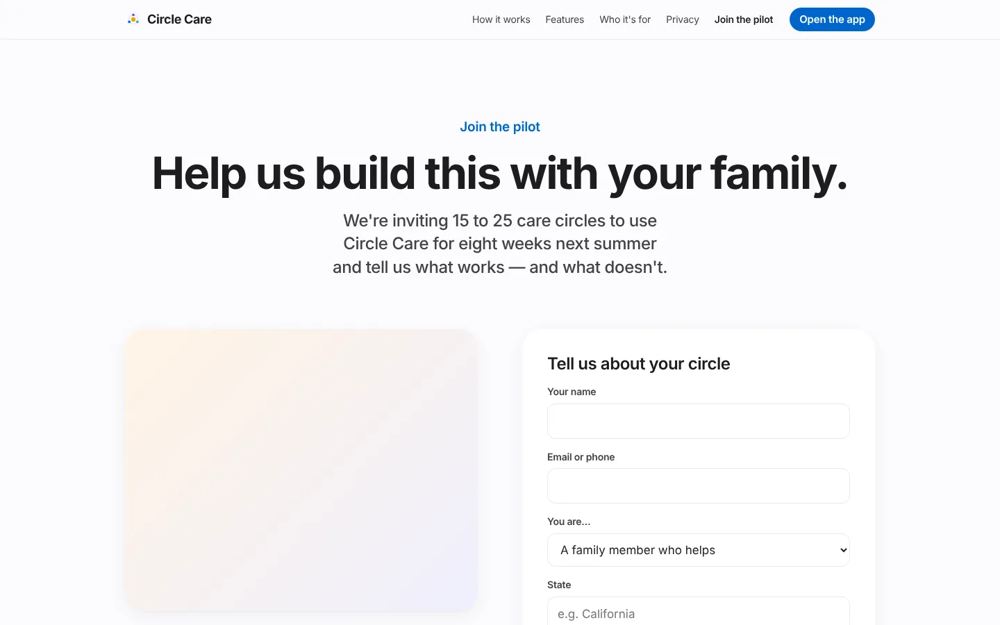
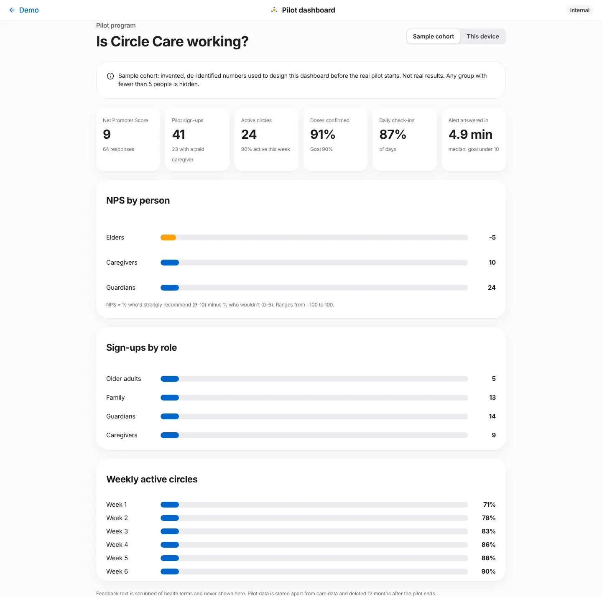
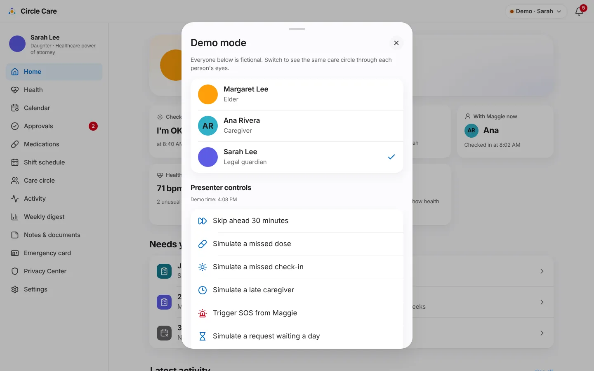

Pilot & feedback¶
Overview¶
What. A Join the pilot page recruits families for an 8-week pilot. Inside the app, a one-question Net Promoter Score survey collects feedback without health details. An internal pilot dashboard shows aggregate results and hides any group smaller than five. Demo mode lets a presenter switch persona and simulate events.
Why. The product must be validated with real families before it is built for real. Research data must never mix with care data, and small pilots make individuals easy to identify.
Business value. Provides the learning loop for the roadmap: recruitment, a standard satisfaction metric and success measures (doses confirmed, check-ins, time to answer an alert) defined before the pilot starts. The full plan is in the pilot plan (CC-74).
User journey¶
Join the pilot (CC-74)¶
/pilot— "Help us build this with your family." "We're inviting 15 to 25 care circles to use Circle Care for eight weeks next summer and tell us what works — and what doesn't."- Promises: Eight weeks, starting May 2027 · A 30-minute setup call, two short check-ins, and a final conversation · Free for life for pilot families, plus a thank-you gift card · You can leave anytime. Your data is deleted when you do.
- Tell us about your circle: Your name, Email or phone, You are… (older adult / family member / legal guardian or POA / professional caregiver), State (e.g. California), Does a professional caregiver visit?, and consent "I agree to be contacted about the pilot. Please don't include any health information here." → Send → "Thank you, (first name). We'll reach out within two weeks to talk about whether the pilot is a good fit for your family."

In-app feedback (CC-76)¶
- After a person's second sign-in, their home screen shows "How likely are you to recommend Circle Care to a friend or colleague?" ("to a friend" for the elder) with a 0–10 scale.
- After choosing a score: "What's the main reason? (optional)" — placeholder "Please don't include health details" → Send feedback ("Thank you — this helps us improve"). "Your answer is stored without your name and kept separate from Maggie's care information."
- The ✕ (Not now) hides it for the session. Presenters can force it with Show the feedback survey.
Pilot dashboard (CC-77)¶
/app/pilot(Internal) — "Is Circle Care working?" with a data-source switch: Sample cohort (invented numbers used to design the dashboard) or This device (real responses made in this browser).- Headline numbers: Net Promoter Score, pilot sign-ups (with a paid caregiver), and for the sample cohort: active circles, doses confirmed (goal 90%), daily check-ins, and median time to answer an alert (goal under 10 minutes).
- Bars for NPS by person, Sign-ups by role and Weekly active circles. Any group with fewer than 5 responses shows "Fewer than 5 — hidden".

Demo mode (CC-80)¶
- The Demo · Name pill opens Demo mode: switch to Margaret Lee, Ana Rivera or Sarah Lee; presenter controls; Review team console; Pilot dashboard; Reset demo; Back to the website. The full control list is in the Demo guide.

Functional details & business rules¶
Data minimisation¶
| Data | Kept | Discarded |
|---|---|---|
| Pilot form | role, state (trimmed to 30 characters), hasPro, time |
Name, contact, consent text |
| NPS | persona, score, scrubbed comment (≤ 500 characters), time |
Name, member id |
Stored in separate browser keys (circle-care-pilot-leads, circle-care-nps), never in the encrypted care state. "Pilot data is stored apart from care data and deleted 12 months after the pilot ends."
Health-word scrubbing (scrubHealth() in src/lib/pilot.ts)¶
Words replaced with [removed] (case-insensitive): mg, mcg, ml, tablet, pill, dose, medic*, diagnos*, diabet*, blood pressure, cholesterol, cancer, dementia, alzheimer*, depress*, anxiety, surgery, prescri*, lisinopril, metformin, atorvastatin, vitamin.
Survey rules¶
| Rule | Value |
|---|---|
| Shown when | The persona has signed in at least twice and has not answered on this device |
| Dismissed | For the browser session |
| NPS formula | % scoring 9–10 minus % scoring 0–6, rounded; −100 to 100 |
Dashboard rules¶
| Rule | Value |
|---|---|
| Minimum cohort | MIN_COHORT = 5 — smaller groups hidden; overall NPS hidden below 5 responses |
| Sample cohort | Deterministic pseudo-random data: 64 NPS responses, 41 sign-ups (all California), 24 circles, weekly activity 71% → 90%, doses confirmed 91%, check-ins 87%, median alert answer 4.9 min |
| Free text | Never shown on the dashboard |
Permissions & privacy¶
- The dashboard and review console are labelled Internal and reached from demo mode; in the prototype they have no separate sign-in.
- Only aggregates are shown; nothing can identify a person or show health details.
Prototype gap
The pilot form asks for name and contact but the prototype discards them. A real pilot needs a separate, deletable contact store with its own consent (finding 5 in the docs index).
Notifications¶
None. The setup-call request from the welcome tour is stored (settings.setupCallRequested) but not routed anywhere.
Accessibility¶
- The NPS scale is a
radiogroupof eleven labelled radios. - Dashboard bars have text labels and values; hidden groups are announced as "hidden, fewer than 5 responses".
/pilotand/app/pilotpass axe-core.
Data captured¶
| Store | Fields |
|---|---|
PilotLead |
at, role, state, hasPro |
NpsResponse |
at, persona, score, comment? |
Edge cases & error states¶
| Situation | Behaviour |
|---|---|
| Consent box unticked | Send disabled |
| Comment contains medicine names | Scrubbed before storage |
| No responses on this device | Overall NPS shows —; groups hidden |
| Storage blocked | Reads return empty; writes fail silently |
Test coverage¶
| Type | Test |
|---|---|
| E2E | Website: every nav page resolves; pilot sign-up works · CC-76 NPS survey scrubs health words; CC-77 dashboard hides small groups (comment with metformin stored as [removed]; This device shows Fewer than 5 — hidden) · Missed dose escalates… and others use demo-mode controls |
| Accessibility | /pilot, /app/pilot |
| Gap | No unit tests for scrubHealth() or npsScore() |
Known limitations & production gaps¶
| In the prototype | In production (planned) |
|---|---|
| Leads and NPS stay in one browser | Separate research data store with retention and deletion |
| Internal pages have no authentication | Internal tools behind staff SSO, MFA and audit |
| Sample cohort is invented | Real pilot data from 15–25 circles over 8 weeks |
| Keyword scrubbing only | Review free text before analysis; consider removing free text |
| Demo mode in the product build | Removed or feature-flagged for production |